Interaction Design Patterns
Over the course of my work, I have designed patterns to cater to challenges of navigation and interaction. This helped achieve an efficient system and framework for arriving at an enhanced experience
AIDA
Image Recognition Tool
Using AI and Image recognition software to look up database and provide suitable match. The image can be sent via email to a preconfigured address that will automatically trigger the AI to run and look for matches. It will display a summary of matches after it completes the processing and matching. This can have a huge impact. e.g. Xray can be diagnosed with help of this AI and help narrow down with historic samples.
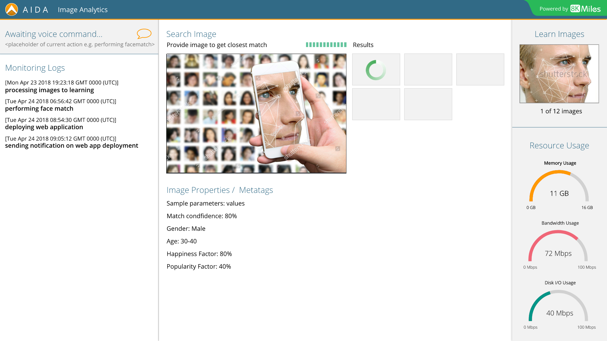
Data Lake Data Pipeline
Visualization and Interaction
A visual representation of the datalake and its various components in the data pipeline. Also, the nuclear navigation pattern to arrive at resources by tags or tags by resources was developed for powerful navigation. Also a way to visually depict the provenance or data lineage was designed. It showcases the source and what transformation the file went through.
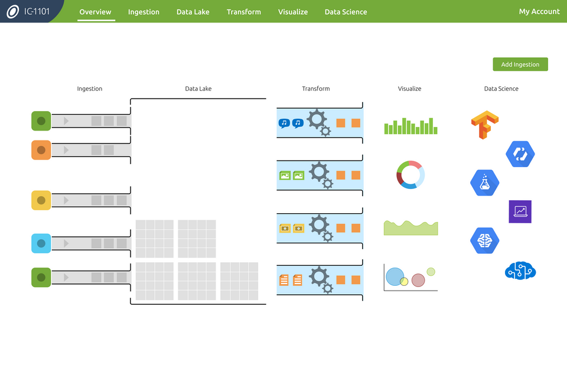
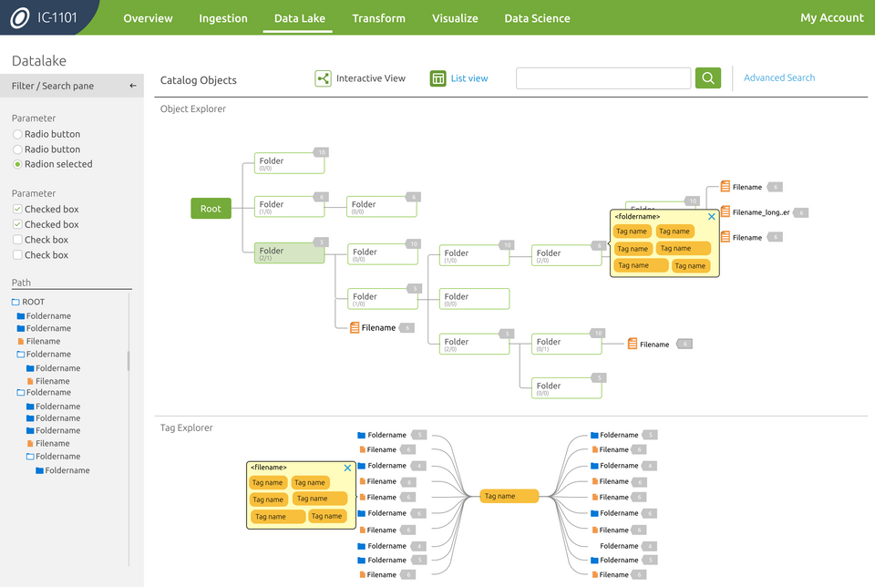
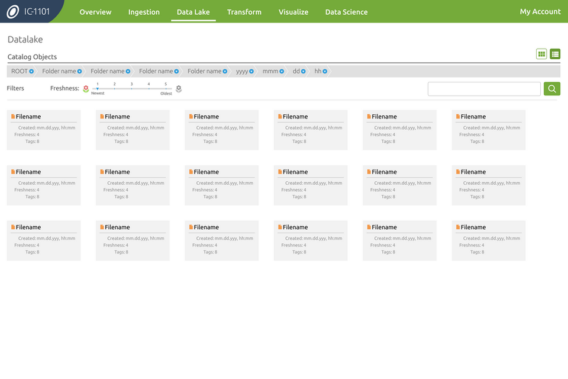
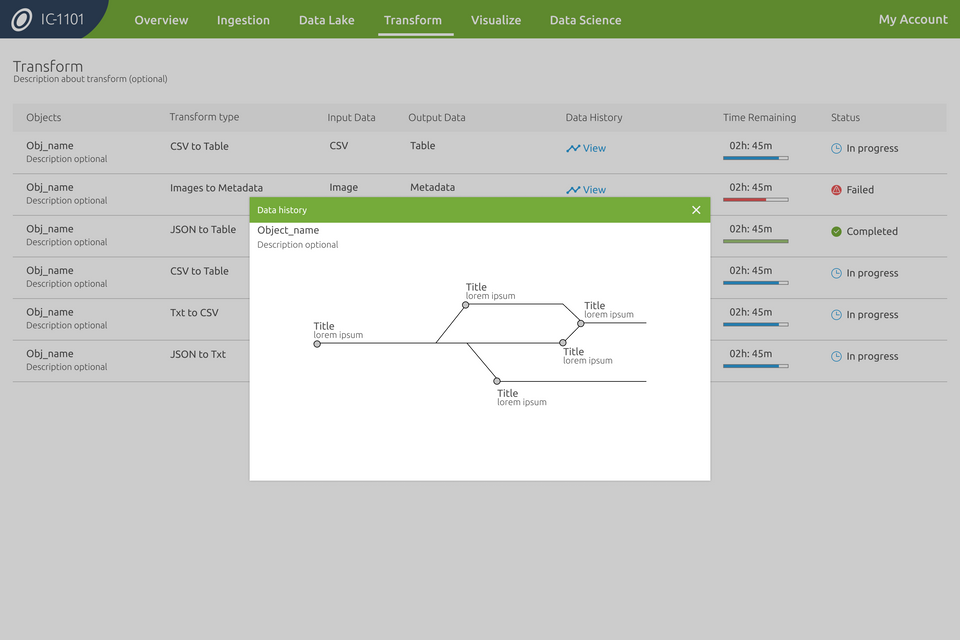
Scheduling Pattern
Intermodal App
The intermodal usecases provided useful insights to come up with an innovative pattern and interaction within a map
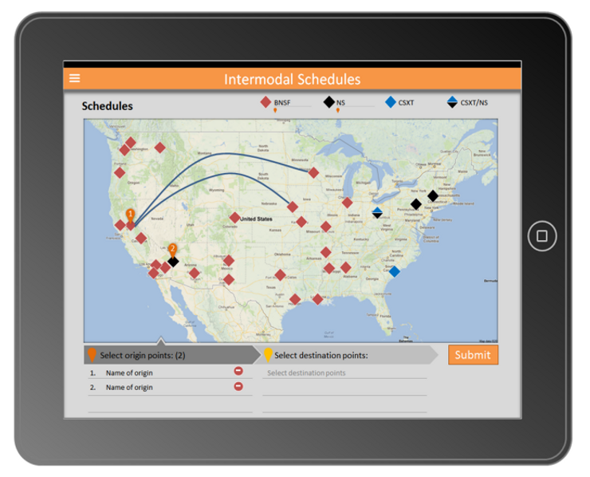
Business Rules Tool
Wells Fargo
A tool to choose rules and configure the data set inputs to provide an automated output in the form of reports. The tool also had scheduling and tracking the successfully executed rules and pending ones.
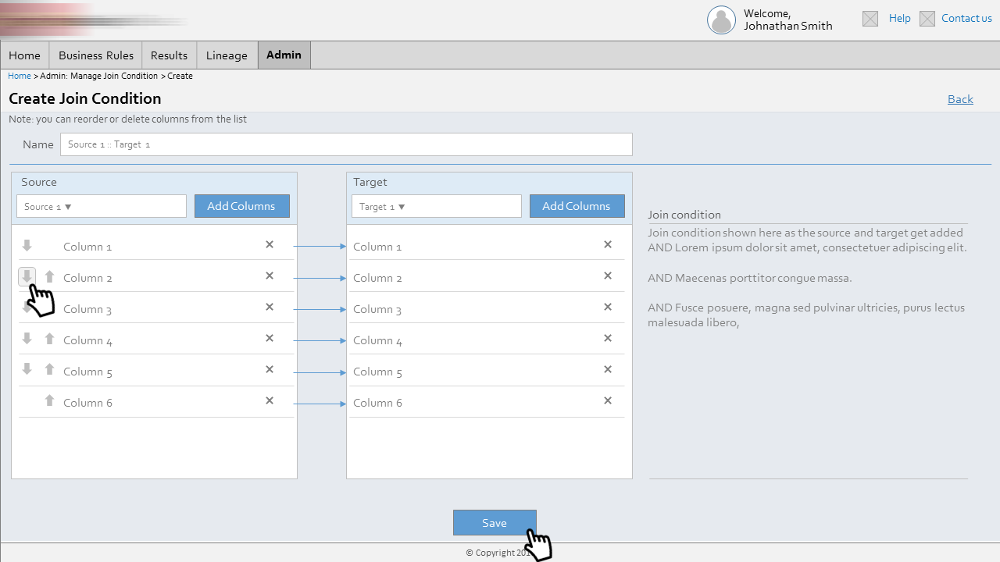
Timeline Tool
Horizons Education Site
The pattern of a time line helps the aspiring students to pursue their dreams armed with better knowledge and knowhow
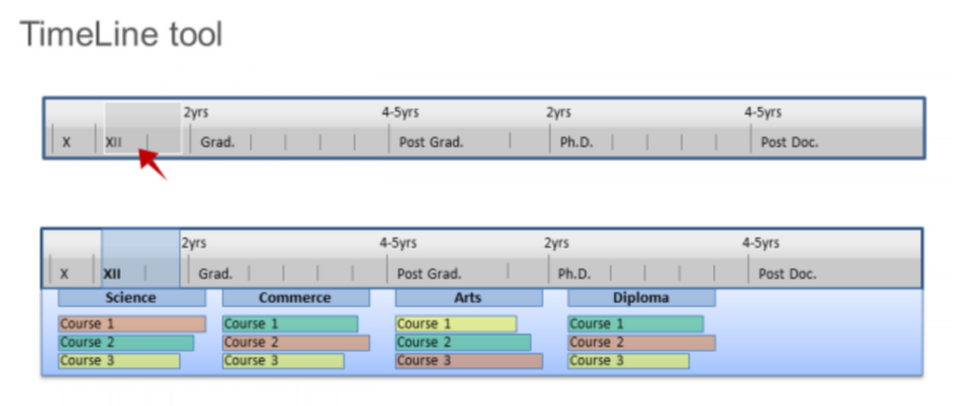
Radial Menu
me@PwC App
A radial Menu with intuitive interaction to look at details was created for the me@PwC app for iOS.
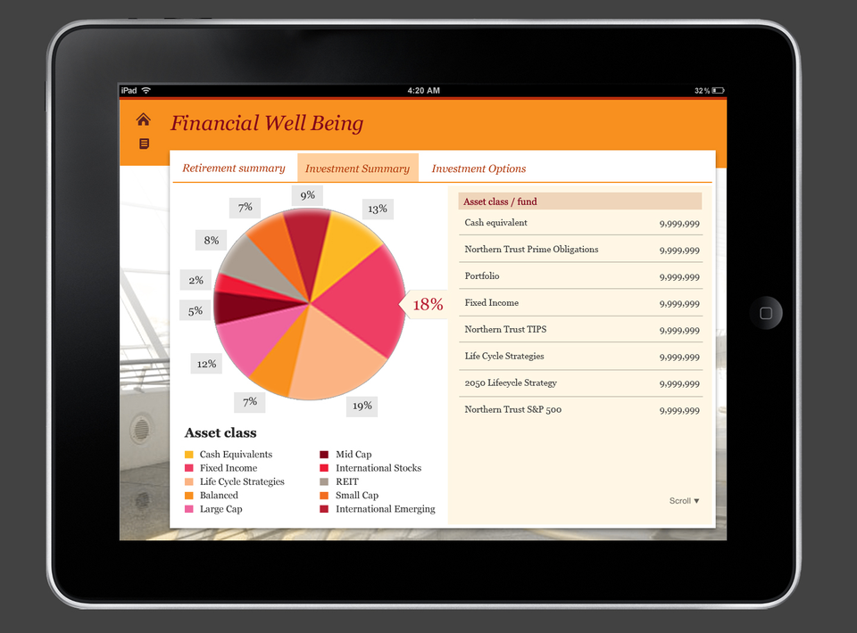
Navigation Pattern
Pathfinder App
Interaction pattern for a career path program within an enterprise. The four-way navigation and overview would provide a picture of the career options available in an organization. This later became a part of WithInfy, an intranet portal of Infosys.
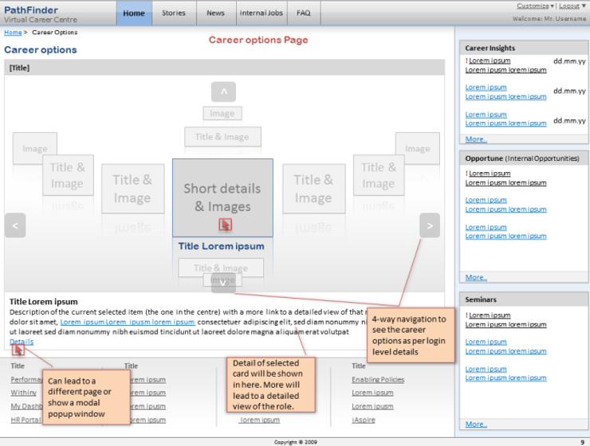
Dashboard PageType
X-Portal
As part of org wide initiative, the XPortal was rolled out comprising of page types, UI Kits and assets that could be easily reused across domains.
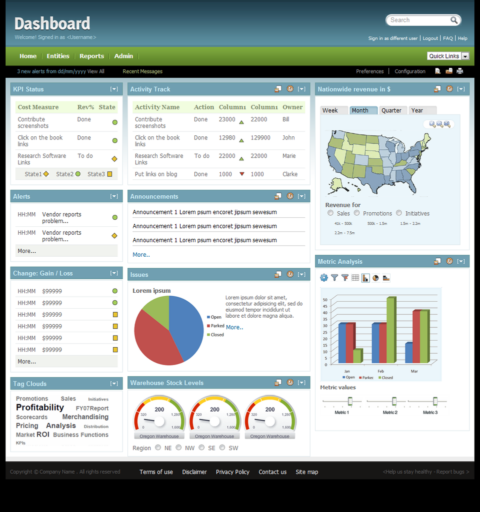